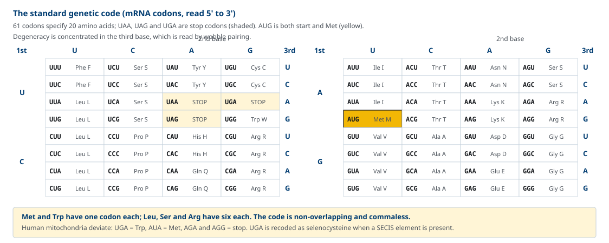
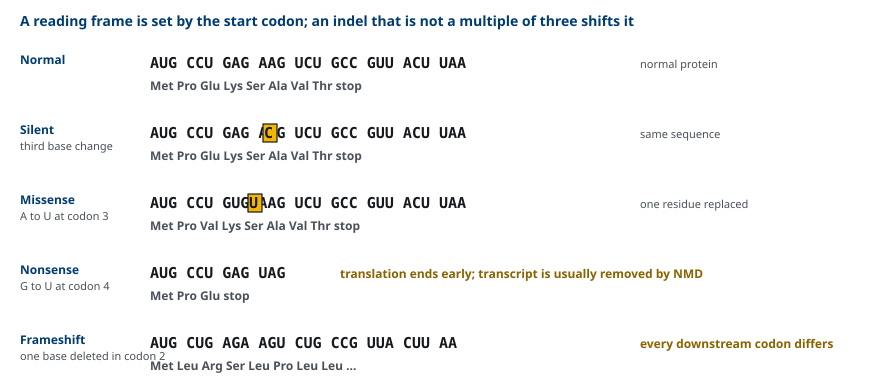
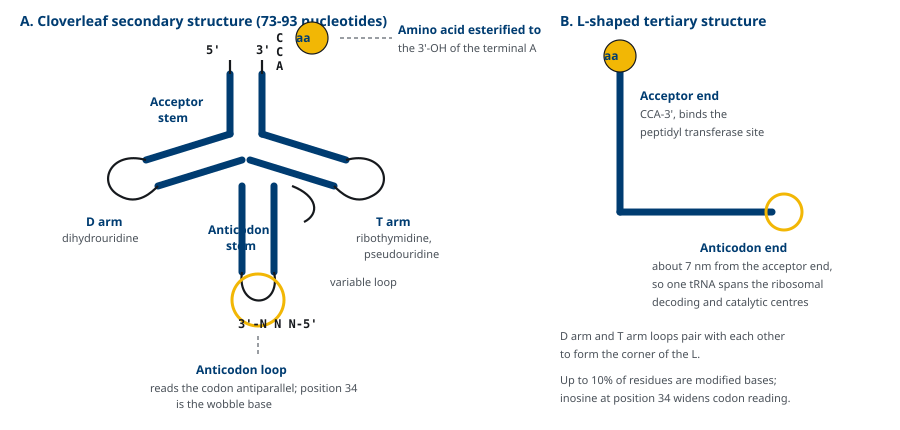
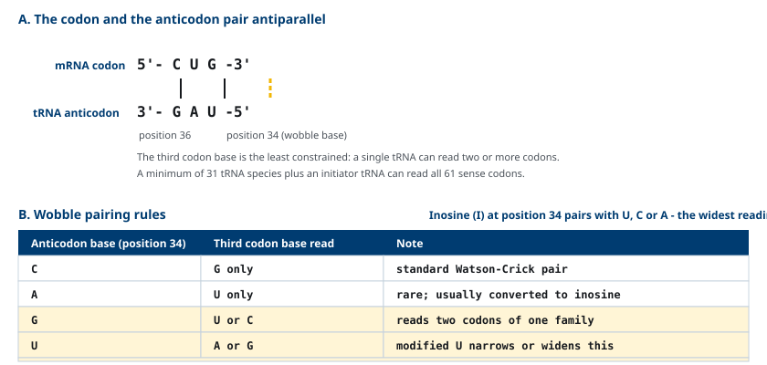
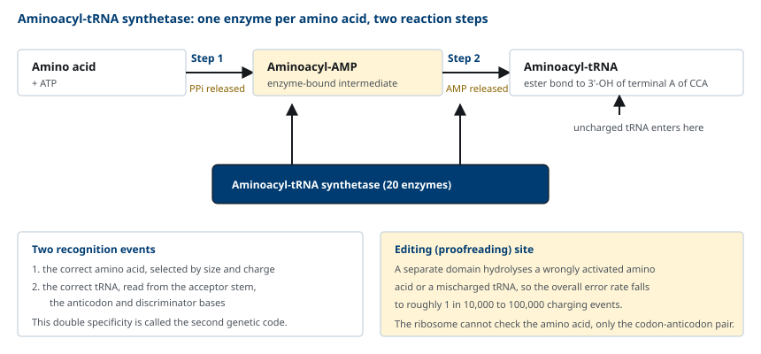
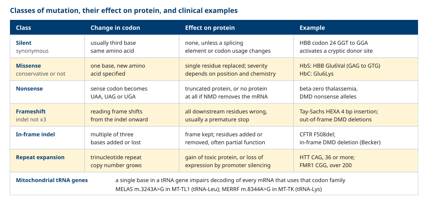

M03-W03-L02 · 분자유전학과 계통별 의학생화학특론
유전암호와 tRNA의 역할
The Genetic Code and the Role of tRNA
학습목표
- 유전암호의 네 가지 성질(삼염기, 축퇴성, 비중첩·쉼표 없음, 보편성)을 각각 근거와 함께 설명한다.
- 개시 코돈과 세 종결 코돈을 적고 reading frame이 어떻게 정해지는지 설명한다.
- tRNA의 cloverleaf 2차 구조와 L자형 3차 구조에서 두 기능 말단의 위치를 설명한다.
- Wobble 규칙을 적고 61개 코돈이 31종 남짓의 tRNA로 해독되는 이유를 설명한다.
- Aminoacyl-tRNA synthetase의 두 단계 반응과 교정 기전이 번역 정확성을 결정하는 이유를 설명한다.
- Silent, missense, nonsense, frameshift, in-frame indel, 반복서열 확장 변이의 결과를 구분하고 임상 예를 든다.
선수지식
- M03-W03-L01 Splicing 이상과 질환 — 성숙 mRNA의 구성, nonsense-mediated decay
- M03-W02-L03 전사와 RNA 가공 — mRNA의 5' cap, poly(A), UTR의 정의
- M01-W02-L01 아미노산의 구조와 분류 — 전하와 크기에 따른 아미노산의 성질
강의 구성
- 1. 유전암호의 정의와 해독의 전체 구조
- 2. 유전암호의 네 가지 성질
- 3. 개시 코돈, 종결 코돈과 reading frame
- 4. tRNA의 구조
- 5. Codon-anticodon 짝짓기와 wobble
- 6. Aminoacyl-tRNA synthetase와 번역의 정확성
- 7. 돌연변이의 종류와 단백질 수준의 결과
- 8. 번역 수준의 치료와 암호를 이용한 진단
1. 유전암호의 정의와 해독의 전체 구조
유전암호(genetic code)는 mRNA의 염기 서열과 단백질의 아미노산 서열 사이의 대응 규칙이다. 네 종류의 염기로 쓰인 정보를 20종의 아미노산 서열로 바꾸는 사전이며, 번역(translation)은 이 사전을 실제로 적용하는 과정이다.
해독에는 서로 성질이 다른 세 가지 분자가 필요하다.
- mRNA: 읽히는 정보. 염기 서열로 암호를 담는다.
- tRNA: 번역의 매개. 한쪽 끝으로 코돈을 읽고 다른 쪽 끝에 아미노산을 달고 있어 염기 서열과 아미노산을 물리적으로 연결한다.
- ribosome: 반응의 장소. 코돈과 anticodon의 짝짓기를 검사하고 peptide 결합을 만든다.
여기서 중요한 사실은 ribosome이 아미노산을 보지 않는다는 점이다. ribosome은 코돈과 anticodon이 맞는지만 확인한다. 따라서 어떤 tRNA에 어떤 아미노산이 달려 있는지를 정확히 정하는 일은 전적으로 aminoacyl-tRNA synthetase의 몫이다. 이 효소가 틀리면 ribosome은 틀린 아미노산을 그대로 넣는다. 유전암호를 다루는 이 수업에서 tRNA와 그 충전 효소를 함께 보는 이유가 여기에 있다.
mRNA의 염기 서열에서 아미노산을 지정하는 단위는 코돈(codon)이고, 길이는 세 염기다. 염기가 네 종류이므로 가능한 코돈은 4³ = 64개다. 그중 61개가 아미노산을 지정하고 3개(UAA, UAG, UGA)는 종결을 지시한다. 코돈은 mRNA의 5'→3' 방향으로 읽고, 그렇게 만들어지는 polypeptide는 N 말단에서 C 말단 방향으로 길어진다.
2. 유전암호의 네 가지 성질
암호의 성질은 네 가지로 정리된다. 각 성질은 질환 해석과 직접 연결되므로 성질마다 결과를 함께 본다.
(1) 삼염기 암호(triplet code) 아미노산 하나가 세 염기로 지정된다. 두 염기로는 4² = 16가지뿐이어서 20종을 다 지정할 수 없고, 세 염기면 64가지로 충분하다. 결과적으로 염기 수가 3의 배수가 아닌 삽입이나 결손은 reading frame을 어긋나게 한다.
(2) 축퇴성(degeneracy) 61개 코돈이 20개 아미노산을 지정하므로 한 아미노산에 여러 코돈이 대응한다. Leucine, serine, arginine은 코돈이 여섯 개이고, methionine과 tryptophan은 하나씩이다. 같은 아미노산을 지정하는 코돈들은 보통 첫 두 염기가 같고 세 번째만 다르다. 축퇴성의 두 가지 결과가 중요하다.
- 세 번째 염기의 치환은 흔히 아미노산을 바꾸지 않는다(silent 변이).
- 코돈이 하나뿐인 methionine과 tryptophan의 코돈에서는 어떤 염기 치환도 아미노산을 바꾸거나 종결을 만든다.
(3) 비중첩(non-overlapping)이고 쉼표가 없다(commaless) 코돈은 서로 겹치지 않고 연속해서 읽힌다. 코돈 사이에 구분 기호가 없으므로 어디서부터 읽기 시작하느냐가 서열 전체의 의미를 정한다.
(4) 보편성과 예외 암호는 세균에서 사람까지 거의 같다. 대장균에서 사람 insulin을 생산할 수 있는 근거가 이 보편성이다. 다만 예외가 있고, 그 예외가 임상적으로 중요하다.
| 예외 | 내용 | 임상적 의미 |
|---|---|---|
| 사람 미토콘드리아 암호 | UGA = Trp, AUA = Met, AGA·AGG = 종결 | 미토콘드리아 유전자 변이 해석에 별도 암호표가 필요하다 |
| Selenocysteine | 3' UTR의 SECIS 요소가 있으면 UGA가 selenocysteine으로 해독된다 | Glutathione peroxidase, iodothyronine deiodinase 등 selenoprotein 합성 |
| 번역 중 frameshift 재암호화 | 일부 바이러스가 reading frame을 의도적으로 바꾼다 | 바이러스 유전체의 정보 압축 |

3. 개시 코돈, 종결 코돈과 reading frame
개시 코돈은 AUG이고 methionine을 지정한다. 따라서 모든 polypeptide는 methionine으로 시작하며, 원핵세포에서는 N-formylmethionine이 쓰인다. 번역이 끝난 뒤 대부분의 단백질에서 이 첫 잔기는 제거된다.
mRNA에는 AUG가 여러 개 있을 수 있으므로 어느 것이 개시 코돈인지 정하는 장치가 따로 있다.
- 원핵세포: 개시 코돈 상류의 Shine-Dalgarno 서열이 16S rRNA와 염기쌍을 이루어 ribosome을 위치시킨다. 한 mRNA에 여러 개시 지점이 있을 수 있다(polycistronic).
- 진핵세포: 5' cap에 결합한 복합체가 5' 말단부터 하류로 훑어 내려가 처음 만나는 AUG에서 개시한다. 주변 서열(Kozak 서열, 특히 -3 위치의 purine과 +4의 G)이 개시 효율을 정한다.
종결 코돈은 UAA, UAG, UGA 세 개로 어떤 아미노산도 지정하지 않고 release factor가 인식한다.
개시 코돈이 정해지면 그 지점부터 세 염기씩 끊어 읽는 reading frame이 정해진다. 어떤 염기 서열이든 세 가지 reading frame으로 읽을 수 있고 그중 하나만 의미가 있다. 따라서 삽입이나 결손의 염기 수가 3의 배수인지 아닌지가 결과를 완전히 갈라놓는다.

- 3의 배수가 아닌 indel(frameshift): 변이 지점 하류의 모든 코돈이 달라진다. 보통 곧 종결 코돈이 나타나 단백질이 잘린다.
- 3의 배수인 indel(in-frame): frame이 유지되어 아미노산이 몇 개 늘거나 줄어든다. 기능이 일부 남는 경우가 많다.
이 구분이 치료 전략까지 바꾼다. *DMD*의 결손이 frame을 어긋나게 하면 Duchenne muscular dystrophy가 되고 frame을 유지하면 경한 Becker muscular dystrophy가 된다. 그래서 exon skipping 치료로 frame을 맞추는 전략이 성립한다.
4. tRNA의 구조
tRNA는 길이 73~93 뉴클레오타이드의 작은 RNA다. 세포에는 아미노산별로 하나 이상의 tRNA가 있고, 사람 유전체에는 tRNA 유전자가 400개 이상 있다.
염기쌍 형성에 의한 2차 구조는 cloverleaf 모양이다. 네 부분으로 나뉜다.
- Acceptor stem: 5' 말단과 3' 말단 근처가 짝을 이룬 줄기다. 3' 말단은 모든 tRNA에서 CCA로 끝나고, 마지막 A의 3'-OH에 아미노산이 에스터 결합으로 붙는다.
- D arm: dihydrouridine을 포함한다.
- Anticodon arm: 고리 가운데에 세 염기의 anticodon이 있다. 코돈과 역평행으로 짝을 이룬다.
- T arm: ribothymidine과 pseudouridine을 포함한다. 여기에 변이형 고리(variable loop)가 더해진다.
tRNA 염기의 최대 10%가 수정 염기다. dihydrouridine, pseudouridine, inosine, methyl 유도체 등이며, 구조 안정화와 해독 범위 조절에 쓰인다.
3차 구조는 L자형이다. D arm과 T arm의 고리가 서로 결합해 L의 꺾이는 부분을 만들고, 그 결과 anticodon 말단과 아미노산이 붙는 말단이 분자의 양 끝, 약 7 nm 떨어진 곳에 놓인다. ribosome에서 코돈을 읽는 자리(소단위의 해독 중심)와 peptide 결합이 만들어지는 자리(대단위의 peptidyl transferase 중심)가 떨어져 있으므로, tRNA는 두 자리를 동시에 잇는 길이를 가져야 한다. 구조가 기능에서 요구되는 치수를 따르는 예다.

5. Codon-anticodon 짝짓기와 wobble
코돈과 anticodon은 역평행으로 결합한다. 코돈의 첫 염기는 anticodon의 세 번째 염기와, 코돈의 세 번째 염기는 anticodon의 첫 염기와 짝을 이룬다. anticodon의 첫 염기(tRNA 34번 위치)를 wobble 위치라 부른다.
이 자리에서는 Watson-Crick 규칙이 느슨하게 적용되어 한 tRNA가 여러 코돈을 읽을 수 있다.
- anticodon의 G는 코돈의 U와 C를 모두 읽는다.
- anticodon의 U는 코돈의 A와 G를 모두 읽는다.
- anticodon의 inosine(I)은 코돈의 U, C, A를 읽는다. 가장 넓다.
- anticodon의 C는 G만, A는 U만 읽는다.

Wobble의 결과는 두 가지다. 첫째, 61개 코돈을 읽는 데 61종의 tRNA가 필요하지 않다. 이론적으로 31종의 tRNA와 개시 tRNA 하나로 모든 sense 코돈을 읽을 수 있다. 둘째, 축퇴성이 세 번째 염기에 몰려 있는 암호표의 구조가 wobble과 맞물린다. 암호표에서 네 코돈이 한 아미노산을 지정하는 칸(예: GCU/GCC/GCA/GCG = alanine)은 inosine을 가진 tRNA 하나와 다른 하나로 충분히 읽힌다.
여기서 반대 방향의 함의도 나온다. 세 번째 염기가 느슨하게 읽히므로 세 번째 염기의 치환은 많은 경우 아미노산을 바꾸지 않고(silent), 반대로 첫 번째나 두 번째 염기의 치환은 거의 항상 아미노산을 바꾼다. 변이의 위치만으로 1차적인 예측이 가능한 근거다.
6. Aminoacyl-tRNA synthetase와 번역의 정확성
tRNA에 아미노산을 붙이는 반응을 충전(charging)이라 하고, 효소는 aminoacyl-tRNA synthetase다. 아미노산마다 효소가 하나씩 있어 20종이 존재한다.
반응은 두 단계로 나뉘고, 효소에 결합한 중간체를 거친다.
1. 활성화: 아미노산 + ATP → aminoacyl-AMP(효소 결합 상태) + PPi. 방출된 PPi는 가수분해되어 반응을 비가역으로 만든다. 2. 전달: aminoacyl 부분이 tRNA의 3' 말단 A의 3'-OH로 옮겨지고 AMP가 방출된다.
결과로 만들어지는 에스터 결합은 고에너지 결합이고, 이 에너지가 뒤이은 peptide 결합 형성에 쓰인다. 아미노산 하나를 붙이는 데 ATP 2개에 해당하는 에너지가 소비된다(ATP → AMP + 2 Pi).

이 효소가 두 가지를 동시에 알아보아야 한다는 점이 중요하다. 올바른 아미노산을 크기와 전하로 구분해 고르고, 동시에 올바른 tRNA를 acceptor stem, anticodon, 식별 염기로 구분해 고른다. 이 이중 특이성 때문에 synthetase를 제2의 유전암호라 부른다.
정확성은 기질 선택만으로 확보되지 않는다. 화학적으로 비슷한 아미노산(valine과 isoleucine, serine과 threonine)은 활성 부위에서 구분이 어렵다. 그래서 많은 synthetase가 별도의 교정(editing) 부위를 가지고 잘못 활성화된 아미노산이나 잘못 충전된 tRNA를 가수분해한다. 교정을 포함한 전체 오류율은 충전 10⁴~10⁵회당 1회 수준이다.
7. 돌연변이의 종류와 단백질 수준의 결과
유전암호의 성질을 알면 염기 변화가 단백질에 어떤 결과를 낼지 분류할 수 있다. 분류의 기준은 코돈이 어떻게 바뀌는가다.

- Silent(synonymous) 변이: 코돈이 바뀌어도 같은 아미노산을 지정한다. 대개 세 번째 염기의 치환이다. 단백질 서열에는 영향이 없으나 splicing 조절 서열이나 코돈 사용 빈도를 바꾸면 질환이 될 수 있다.
- Missense 변이: 다른 아미노산이 들어간다. 성질이 비슷한 아미노산으로 바뀌면(보존적) 영향이 작고, 전하나 크기가 크게 달라지면 기능이 손상된다. Sickle cell disease는 HBB 6번 코돈의 GAG→GTG로 glutamate(음전하)가 valine(소수성)으로 바뀐 결과다. 같은 자리에서 lysine으로 바뀌면 HbC가 된다. 같은 위치의 다른 아미노산 치환이 다른 질환을 만든다.
- Nonsense 변이: sense 코돈이 종결 코돈으로 바뀐다. 번역이 조기에 끝나 잘린 단백질이 생기거나, 전사체가 nonsense-mediated decay로 제거되어 아무 단백질도 생기지 않는다.
- Frameshift 변이: 3의 배수가 아닌 indel로 하류의 모든 코돈이 바뀐다. Tay-Sachs disease에서 흔한 *HEXA*의 4 염기 삽입이 예다.
- In-frame indel: 3의 배수 indel로 frame이 유지된다. *CFTR*의 F508del은 phenylalanine 하나가 빠진 변이로, 단백질이 만들어지지만 접히지 못한다.
- 반복서열 확장: 삼염기 반복의 복제수가 늘어난다. *HTT*의 CAG 반복이 36개 이상이면 Huntington disease가 발현되고, FMR1 5' UTR의 CGG 반복이 200개를 넘으면 promoter가 methylation되어 발현이 꺼진다(fragile X syndrome).
| 변이 | 아미노산 서열 | 단백질 길이 | 전사체 안정성 |
|---|---|---|---|
| Silent | 변화 없음 | 같음 | 보통 영향 없음 |
| Missense | 한 잔기 치환 | 같음 | 영향 없음 |
| Nonsense | 변이 지점까지만 | 짧아짐 | NMD로 감소 가능 |
| Frameshift | 하류 전체 변화 | 대개 짧아짐 | NMD로 감소 가능 |
| In-frame indel | 몇 잔기 증감 | 조금 달라짐 | 영향 없음 |
8. 번역 수준의 치료와 암호를 이용한 진단
암호의 성질을 알면 치료 전략이 어디에 끼어들 수 있는지도 보인다.
종결 코돈 통과 유도(readthrough) nonsense 변이에서는 조기 종결 코돈을 무시하고 번역을 계속하게 만들면 온전한 길이의 단백질이 일부 생길 수 있다. Ataluren은 이 원리의 저분자 약물로 nonsense 변이형 Duchenne muscular dystrophy에서 조건부 승인을 받았다. Aminoglycoside 항생제도 같은 작용을 보이지만 독성 때문에 치료에 쓰기 어렵다. 적응증이 변이의 종류(nonsense)로 정해지므로 처방 전 유전 검사가 필수다.
암호의 보편성을 이용한 단백질 생산 보편성 덕분에 사람 유전자를 세균이나 효모, 포유류 세포에서 발현시켜 치료용 단백질을 생산할 수 있다. 재조합 insulin, erythropoietin, 응고인자, 단클론 항체가 그 산물이다. 다만 숙주에 따라 코돈 사용 빈도와 번역 후 수정이 다르므로 코돈 최적화와 숙주 선택이 필요하다. mRNA 백신에서는 같은 아미노산을 지정하는 코돈 중 번역 효율이 높은 것을 고르고 uridine을 수정 염기로 바꾸어 안정성과 면역원성을 조절한다.
미토콘드리아 질환의 해석 미토콘드리아 암호가 다르므로 미토콘드리아 유전자의 변이는 별도 암호표로 해석한다. 또한 미토콘드리아 유전체는 모계로만 전달되고 세포당 수백에서 수천 복제가 있어 이형질성 비율이 표현형을 좌우한다. 같은 m.3243A>G 변이가 비율에 따라 MELAS, MIDD, 또는 무증상으로 나타난다.
| 전략 | 표적 | 적응되는 변이 유형 |
|---|---|---|
| Readthrough 유도(ataluren) | 조기 종결 코돈 | nonsense |
| Exon skipping ASO | reading frame | frame을 어긋나게 하는 결손 |
| 유전자 대체(AAV) | 결손·무발현 대립유전자 | 모든 무발현 변이 |
| 염기 교정·유전자 교정 | 염기 자체 | 특정 지점 변이 |
| 코돈 최적화 발현 | 생산 숙주 | 치료 단백질 제조 |
확인 문항
유전암호가 삼염기 단위라는 사실만으로 예측할 수 있는 임상적 결과를 두 가지 이상 들라.
해설
첫째, 삽입이나 결손의 염기 수가 3의 배수가 아니면 reading frame이 어긋나 하류의 모든 코돈이 달라지고 대개 조기 종결이 생긴다. 반대로 3의 배수이면 frame이 유지되어 아미노산 몇 개만 증감하므로 기능이 일부 남는 경우가 많다. *DMD*의 frame 유지 여부가 Duchenne형과 Becker형을 가르는 것이 그 예다. 둘째, 3의 배수인 반복서열(삼염기 반복)의 확장은 frame을 유지한 채 같은 아미노산을 반복해 넣으므로, 단백질이 만들어지면서 독성 응집을 일으키는 기전이 가능해진다. Huntington disease의 polyglutamine 확장이 그 예다.
Methionine과 tryptophan은 코돈이 하나뿐이다. 이 사실이 변이의 결과 예측에 어떤 의미를 가지는가.
해설
축퇴성이 없으므로 이 두 아미노산의 코돈에서는 어떤 염기 치환도 silent가 될 수 없다. AUG의 어느 염기가 바뀌어도 다른 아미노산을 지정하게 되고, UGG는 한 염기 치환으로 UGA나 UAG 종결 코돈이 될 수 있다. 특히 개시 코돈 AUG의 변이는 개시 자체를 막아 단백질이 전혀 만들어지지 않을 수 있으므로, 개시 코돈 변이는 무발현 대립유전자로 분류된다.
61개의 sense 코돈이 있는데 왜 61종의 tRNA가 필요하지 않은가. 그 근거가 암호표의 구조와 어떻게 맞물리는지 설명하라.
해설
Wobble 때문이다. anticodon의 첫 염기(34번 위치)는 코돈의 세 번째 염기와 느슨하게 짝지어, G는 U와 C를, U는 A와 G를, inosine은 U·C·A를 읽는다. 따라서 하나의 tRNA가 두 개 이상의 코돈을 읽을 수 있고 이론적으로 31종의 tRNA와 개시 tRNA로 모든 sense 코돈을 해독할 수 있다. 암호표에서 축퇴성이 세 번째 염기에 집중되어 있고 같은 아미노산의 코돈들이 첫 두 염기를 공유하는 구조가, 바로 이 느슨한 짝짓기로 효율적으로 읽히도록 배열되어 있다.
Ribosome은 codon-anticodon 짝짓기를 검사하지만 tRNA에 달린 아미노산은 검사하지 않는다. 이 사실이 번역 정확성에 대해 무엇을 뜻하는가.
해설
번역 정확성의 책임이 aminoacyl-tRNA synthetase에 집중된다는 뜻이다. 어떤 tRNA에 잘못된 아미노산이 달려 있어도 anticodon이 코돈과 맞으면 ribosome은 그것을 받아들여 peptide에 넣는다. 그래서 synthetase는 아미노산과 tRNA를 모두 인식해야 하고(제2의 유전암호), 화학적으로 비슷한 아미노산을 구분하기 위해 별도의 교정 부위를 가져 잘못된 중간체와 잘못 충전된 tRNA를 가수분해한다. 그 결과 전체 오류율이 충전 10⁴~10⁵회당 1회 수준으로 유지된다.
Sickle cell disease(HbS)와 HbC는 *HBB*의 같은 6번 코돈 변이로 생기지만 임상상이 다르다. 유전암호와 아미노산 성질로 설명하라.
해설
두 변이 모두 6번 코돈의 glutamate를 바꾸는 missense 변이다. HbS는 GAG→GTG로 valine이 들어가 소수성 잔기가 되고, 이 잔기가 탈산소 상태에서 다른 hemoglobin 분자의 소수성 주머니와 결합해 중합체를 만들어 적혈구를 변형시킨다. HbC는 glutamate가 lysine으로 바뀌어 음전하가 양전하로 역전되지만 중합을 일으키지는 않고 용해도 감소와 결정화를 유발하므로, 단독 동형접합에서는 경한 용혈과 표적세포 소견을 보인다. 같은 위치의 치환이라도 들어간 아미노산의 화학적 성질이 결과를 정한다.
어떤 환자에서 미토콘드리아 유전자의 염기 변이가 발견되었다. 핵 유전자와 같은 방식으로 해석하면 생기는 두 가지 오류를 지적하라.
해설
첫째, 암호표가 다르다. 사람 미토콘드리아에서는 UGA가 Trp를, AUA가 Met를 지정하고 AGA·AGG가 종결 코돈이다. 표준 암호표로 읽으면 nonsense 변이와 missense 변이를 서로 바꿔 판정할 수 있다. 둘째, 용량의 개념이 다르다. 미토콘드리아 DNA는 세포당 수백에서 수천 복제로 존재하므로 변이가 몇 퍼센트의 분자에 있는지(이형질성)가 표현형을 좌우하고, 조직마다 비율이 달라 같은 변이가 서로 다른 임상상으로 나타난다. 또한 전달은 모계로만 이루어지므로 상염색체 유전 양식으로 가족력을 해석하면 안 된다.
어떤 nonsense 변이 환자에게 ataluren을 쓸 수 있지만 frameshift 변이 환자에게는 쓸 수 없다. 이유를 번역 기전으로 설명하라.
해설
Ataluren은 조기 종결 코돈에서 번역이 멈추지 않고 통과하도록 유도하는 약물이다. nonsense 변이에서는 조기 종결 코돈 하류의 서열이 원래 reading frame을 유지하고 있으므로, 그 코돈을 통과하면 이후 서열이 정상대로 번역되어 거의 온전한 단백질이 만들어진다. frameshift 변이에서는 indel 지점 이후의 reading frame 자체가 어긋나 있어, 조기 종결 코돈을 통과시켜도 그 뒤에 읽히는 아미노산 서열이 전부 틀린 단백질이 생긴다. 따라서 적응증이 변이 유형으로 제한되고 처방 전에 변이 종류를 확인해야 한다.
참고문헌
- Ferrier DR (ed). Lippincott Illustrated Reviews: Biochemistry. Chapter 32, Protein Synthesis.
- Crick FHC. Codon-anticodon pairing: the wobble hypothesis. J Mol Biol 1966;19:548–555.
- Ibba M, Söll D. Aminoacyl-tRNA synthesis. Annu Rev Biochem 2000;69:617–650.
- Mohler K, Ibba M. Translational fidelity and mistranslation in the cellular response to stress. Nat Microbiol 2017;2:17117.
- Antonellis A, Green ED. The role of aminoacyl-tRNA synthetases in genetic diseases. Annu Rev Genomics Hum Genet 2008;9:87–107.
- Gorman GS et al. Mitochondrial diseases. Nat Rev Dis Primers 2016;2:16080.
- Keeling KM, Xue X, Gunn G, Bedwell DM. Therapeutics based on stop codon readthrough. Annu Rev Genomics Hum Genet 2014;15:371–394.